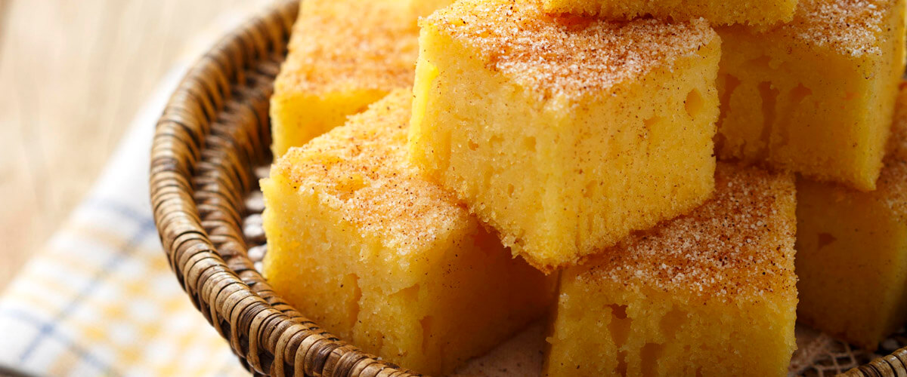
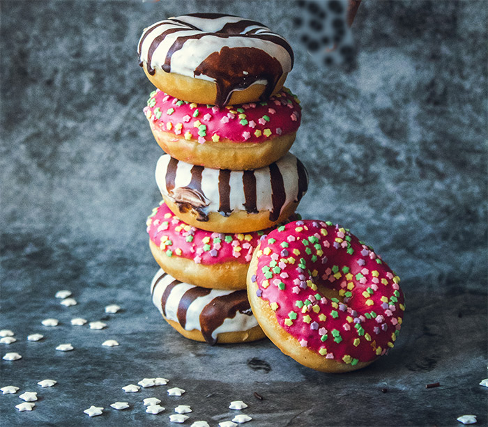

Bolo de Fubá
Ingredientes
- 3 ovos
- 3/4 xícara(chá) de oléo
- 1 e 1/2 xícara(chá) de açucar
- 1 e 1/2 xícara(chá) de fubá
- 1 e 1/2 xícara(chá) de farinha de trigo
- 500ml de leite
- 1 colher de sopa de fermento em pó


Roscas
Ingredientes
- 300g de farinha
- 10g de fermento em pó
- 80g de açucar
- 1 ovo
- 1/2 raspa de limão
- 100ml de leite
- 1l de óleo
Massa de atum
Ingredientes
- 2 latas de atum
- 2 dentes de alho
- 1 cebola picada
- Queijo ralado
- 250g de massa espiral
- 1 lata de salsicha
- Azeite, polpa de tomate e sal